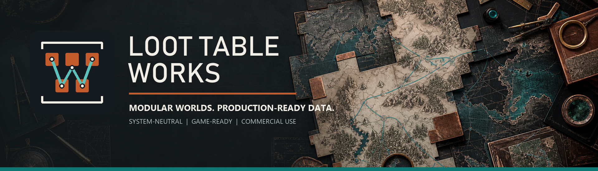

Contract 01
RPG JSON schema design
Choose stable IDs, model references, handle optional fields, version the contract, and separate authored truth from runtime state.
Design the schema
Loot Table Works field manual
Six implementation guides for turning structured content into stable contracts, trustworthy imports, reproducible loot, and tunable economies. Every method is engine-aware, testable, and built around persistent IDs instead of fragile array positions.

Six high-intent guides
Start with an engine-neutral schema. Validate the complete dataset, generate narrow import contracts, resolve relationships after parsing, and test the gameplay math separately from the records that feed it.
Contract 01
Choose stable IDs, model references, handle optional fields, version the contract, and separate authored truth from runtime state.
Design the schemaImport 02
Use serializable wrappers and DTOs, then build runtime dictionaries without asking JsonUtility to solve relationships it cannot represent.
Build the Unity importerImport 03
Parse external JSON into typed Resources while preserving source IDs and keeping file paths out of the content contract.
Build the Godot importerBoundary 04
Treat imported JSON as unknown, narrow it at one boundary, and use branded IDs and readonly records inside the application.
Model the TypeScript boundaryProbability 05
Distinguish weighted selection from independent rolls, verify unreachable rows, and compare expected probabilities with simulation.
Audit a loot tableEconomy 06
Separate catalog value, merchant policy, market modifiers, and player effects so balance changes remain explainable.
Integrate shops and pricesRecommended sequence
The expensive failures happen when import code silently invents a schema from one convenient record. This sequence moves uncertainty to explicit checks before gameplay systems depend on it.
Define durable IDs, units, enums, nullability, and relationship fields. Keep generated runtime values out of source files.
Scan every record for type drift, missing IDs, duplicate IDs, broken references, and fields that only appear late in the dataset.
Deserialize into narrow transport objects. Convert those objects into engine-owned types in a deliberate second step.
Build ID indexes first, then resolve relationships. Report missing targets with source record IDs and field paths.
Test probability, pricing, restock, and progression behavior with deterministic seeds and inspectable intermediate values.
Record the schema version and write migrations when semantics change. Never reuse an ID for a different concept.
Free local utilities
These browser tools run locally on the supplied data. Use the Doctor to find structural faults, the Bridge to draft engine contracts, and the focused generators to test loot, shops, and world inputs.
Production-ready inputs
Use the guides with original, structured fantasy records. Each module is an independent purchase with JSON and CSV exports plus focused workflow material.